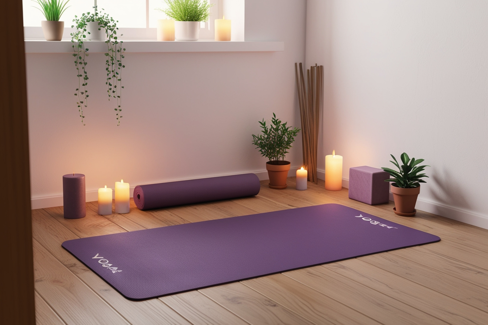

Cómo Crear tu Espacio de Yoga en Casa
Crear un espacio dedicado para tu práctica de yoga en casa puede mejorar significativamente tu experiencia. Aquí te damos algunos consejos para crear tu propio rincón de yoga:
- Elige un lugar tranquilo y con buena iluminación
- Mantén el espacio limpio y ordenado
- Usa colores relajantes en la decoración
- Incorpora elementos naturales como plantas
- Ten a mano tus accesorios de yoga (mat, bloques, mantas)